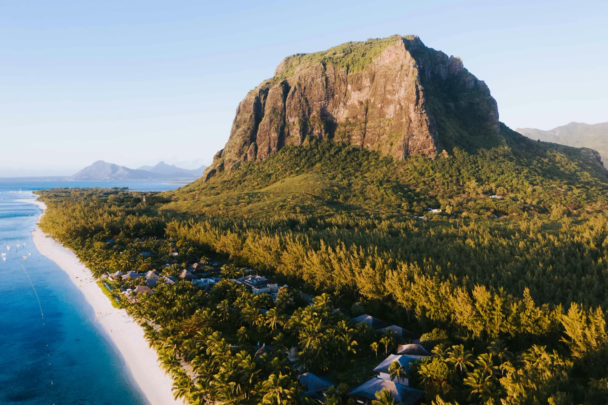
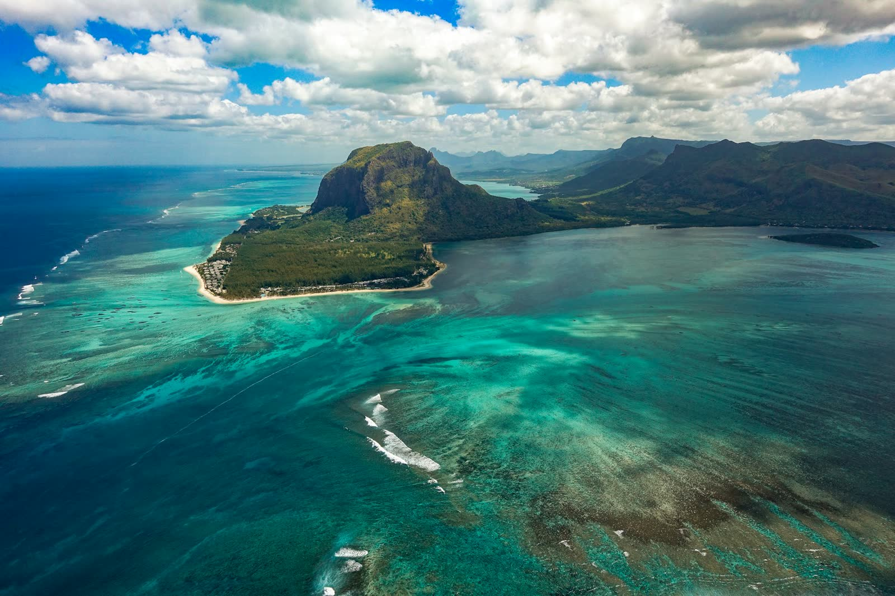
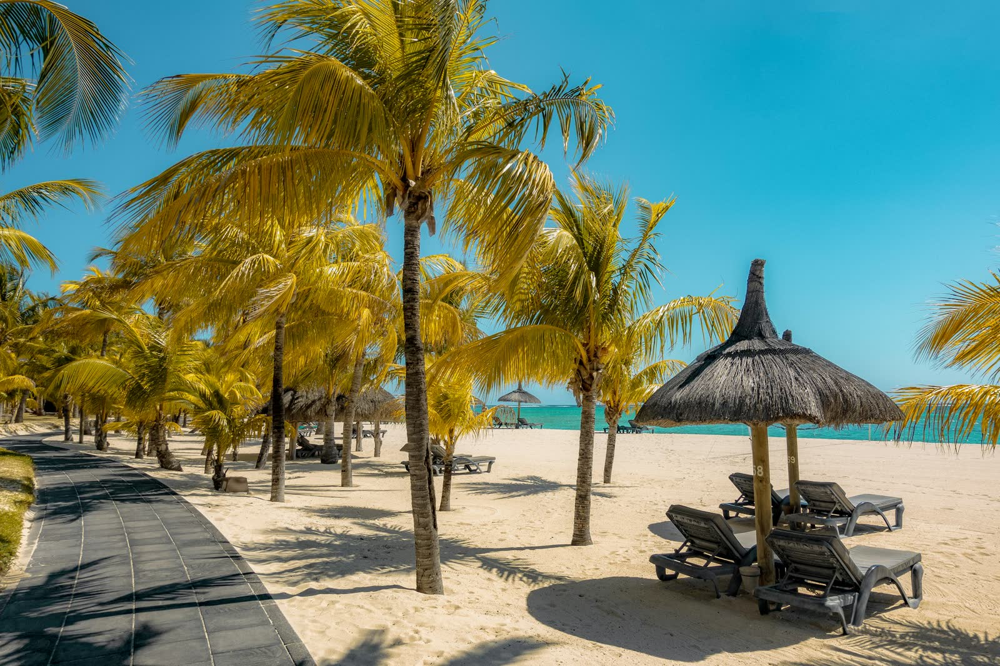
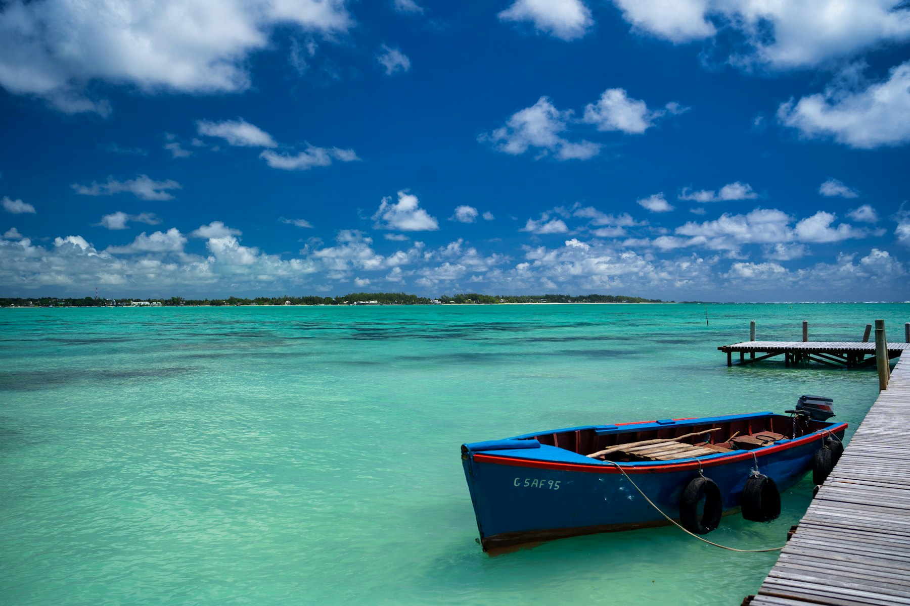
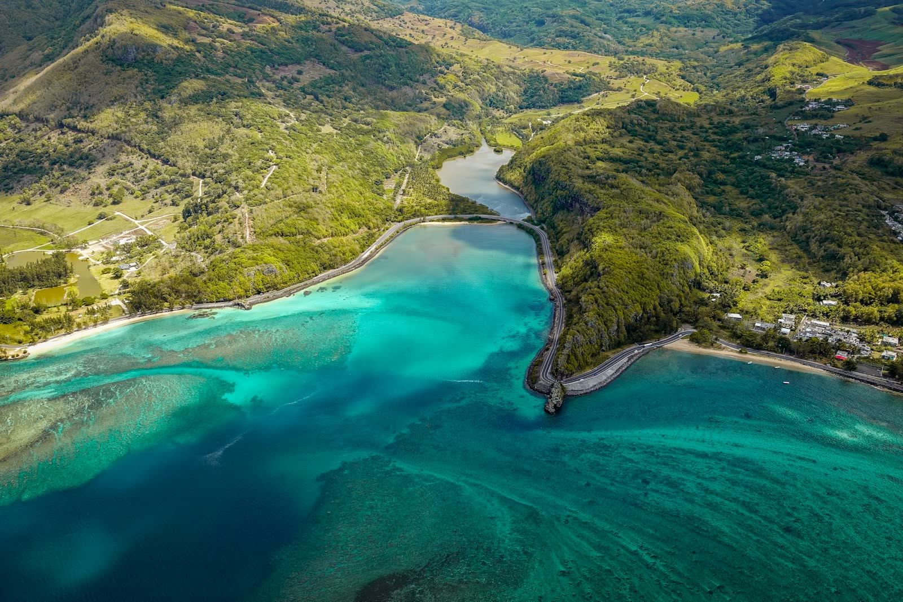
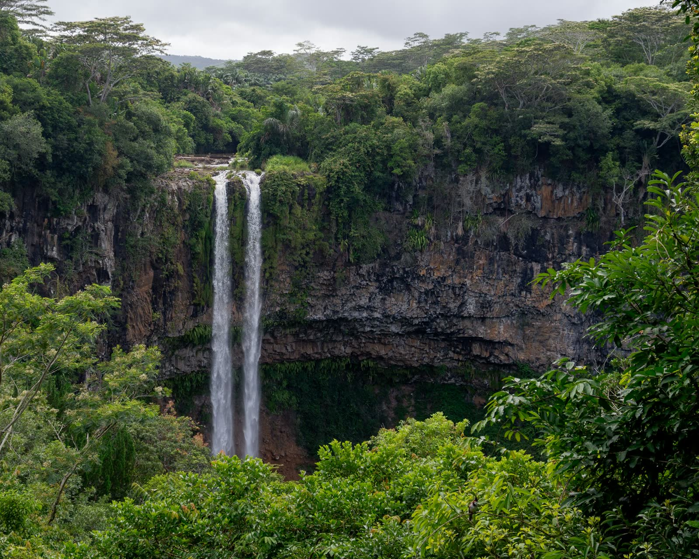
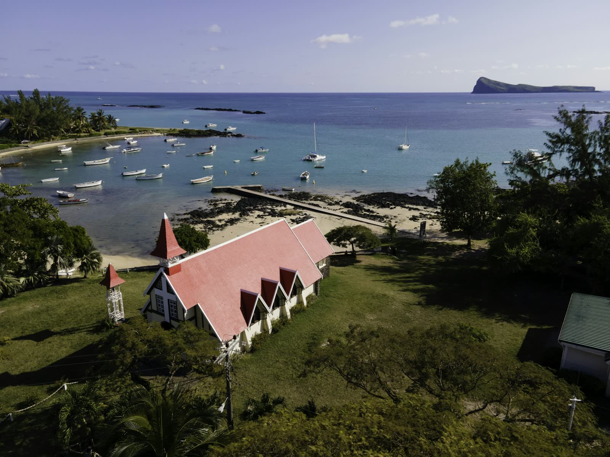
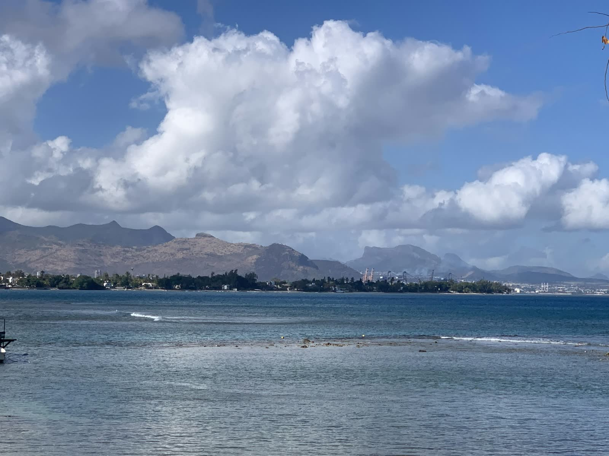
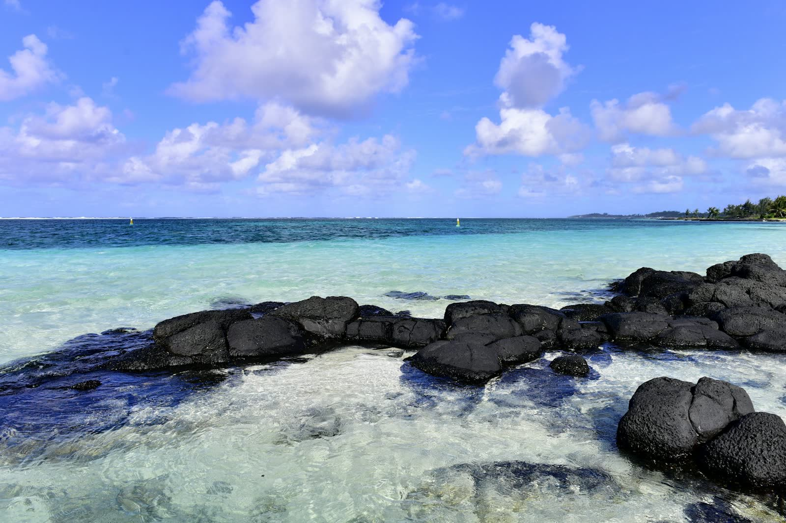

MRU
Rs 25
Rs 25
Le Morne
Mauritius
2026
Mauritius
2026
Le Morne Brabant
Hike it at dawn. The view over the reef is worth every step.
South-westMap →
A volcanic island in the Indian Ocean: turquoise lagoons, basalt peaks, the dodo, and a culture built from four continents. Scroll to fly over it.














A reef wraps almost the whole island, keeping the lagoons inside calm, shallow and impossibly turquoise. Only the wild south coast goes without.
The south-west's famous monolith: UNESCO World Heritage, symbol of freedom, and the island's most photographed view.
Three names, one island. Drag your finger or cursor through the particles.
Traced from real coastline data: about 65 km from north to south and 45 km across.
Found nowhere else on Earth, gone since the late 1600s, and still the island's most famous symbol.
Red for the struggle for freedom, blue for the Indian Ocean, yellow for the light of independence and green for the evergreen land.
Halfway between Africa, Asia and Australia, and closer than you think.
Approximate direct flight times.

Hike it at dawn. The view over the reef is worth every step.
Volcanic dunes in red, violet and ochre that never wash away.
Take the boat across the east lagoon and lose an afternoon.
Rainforest, waterfalls and birds found nowhere else.
Spices at the market, history at Aapravasi Ghat, mountains behind.
A red roof, a blue lagoon and the northern islets on the horizon.
You can drive across Mauritius in about an hour. The bragging rights take longer.
Its exclusive economic zone is roughly a thousand times larger than the island itself.
Piton de la Petite Rivière Noire, rising above the gorges in the south-west.
Aapravasi Ghat in Port Louis and the Le Morne Cultural Landscape.
The first British colony to issue its own stamps. The survivors are among the rarest on Earth.
The Mauritius kestrel was down to four known wild birds in the 1970s. It was brought back.
Red, blue, yellow and green, celebrated every 12 March.
"Mauritius was made first, and then heaven; and that heaven was copied after Mauritius."Mark Twain, quoting a proud local in Following the Equator
Get in the water, head for the hills, or eat your way around the island.